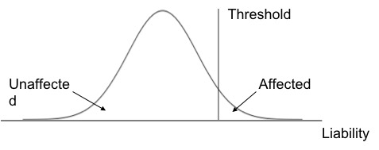

Project
Overview
Background
What is Autism?
Autism, also known as Autism Spectrum Disorder (ASD) is a neurodevelopmental disorder characterized by a spectrum of phenotypes: impariement in social interaction,responsiveness, repetitive, restricted behaviors. It often occure in the early childhood.
What is Exposome?
Exposome is to study the metabolic/molecular signatures generated by internal and external exposures and to understand how these exposures impact human health throughout the lifespan.
These internal and external exposures come from a broad range of sources including environment, diet, behavior and endogenous process.
Liability threshold model
The liability threshold model assumes each individual has a underlying liablity (affected) including genetic and environmental factors and it is normally distributed in a population. The probability of an individual is affected is when the combined genetic and enviromental effects reach to a certain threshold.
Aim
The overall aim of our project is shown from this figure (Adapted from Rappaport. 2014)

We aim to elucidate complex gene x environment interactions in ASD by leveraging existing phenotypic and genomic profiles (blue) and by comprehensively characterizing endogenous and exogenous exposome (including E and M in the figure)(red).